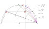

geologic_time_average

Definition: In ordinary language, an average is a single number taken as representative of a list of numbers, usually the sum of the numbers divided by how many numbers are in the list (the arithmetic mean). For example, the average of the numbers 2, 3, 4, 7, and 9 (summing to 25) is 5. Depending on the context, an average might be another statistic such as the median, or mode. For example, the average personal income is often given as the median—the number below which are 50% of personal incomes and above which are 50% of personal incomes—because the mean would be higher by including personal incomes from a few billionaires. For this reason, it is recommended to avoid using the word "average" when discussing measures of central tendency.
Source: Wikipedia
Wikipedia Page (Something wrong with this association? Let us know.)
Wikidata Page (Something wrong with this association? Let us know.)
Occurs in: